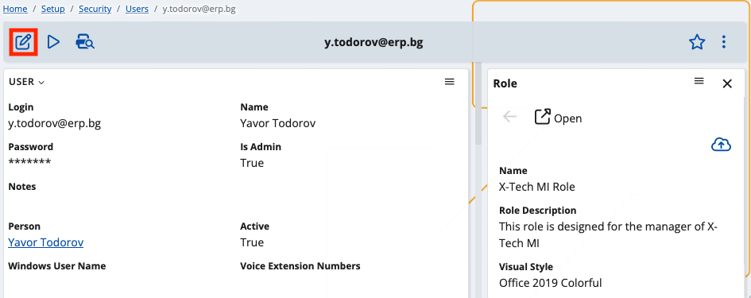

How to define user roles
You can assign roles to security users and link them to specific enterprise companies and company locations.
This option grants different permissions and responsibilities based on an employee’s workplace and department. However, the roles you’re allowed to define will vary. When companies are matched with locations, you can choose only the most suitable entries per combination.
By default, users without predefined enterprise company and company location have role access to all of them.
Prerequisites
Make sure the Roles panel is part of the user’s standard settings definition.
Open the list of default panel and toggle the Roles slider.

This will add the panel to the user’s settings and allow you to define and change custom roles.
Role definition
In the Roles panel, you can link one or more roles to a user.
Their scope can be configured to cover that user’s enterprise company and company location.
- Enter Edit Mode to be able to change settings.

- Navigate to the Roles panel and click the plus button to add a new role.
- Within the expanded side tab on the right, choose values for the Role, Enterprise Company and Company Location fields.
The latter two will determine which roles will appear on the list.

- Apply your settings.